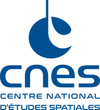
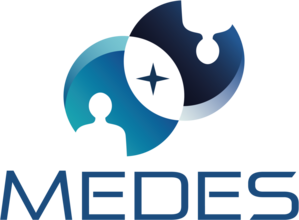
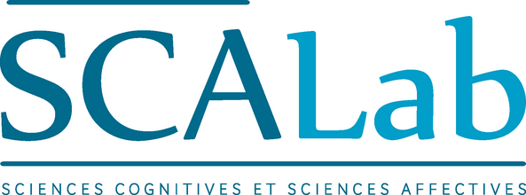
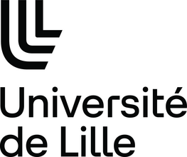
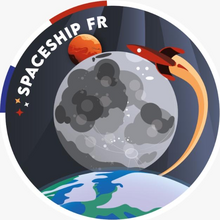

Comprendre le comportement humain pour mieux le concevoir.
Ingénierie des facteurs humains & data comportementale. Je vous aide à comprendre et mesurer comment vos utilisateurs perçoivent, décident et agissent.
Domaines d'intervention
Facteurs Humains & Ergonomie
Audit d'interfaces et de dispositifs, analyse de l'activité humaine et des contraintes, identification des risques et des leviers de performance, recommandations actionnables.
Recherche comportementale
Revue de littérature scientifique, conception de protocoles expérimentaux, mesures comportementales et physiologiques (eye-tracking, capture de mouvement), analyse statistique et interprétation des résultats.
Data Science & UX Research
Recherche utilisateur et audits UX, traitement et modélisation de données comportementales en Python, prédiction par machine learning, restitution actionnable pour équipes techniques ou décideurs.
Une chaîne complète, du terrain à la donnée
Les quatre étapes d'une intervention, du cadrage de la problématique jusqu'à la recommandation.
Observation terrain
Analyse de l'activité réelle, des contraintes opérationnelles et des situations. Traduction de la question en objet mesurable.
Mesure scientifique
Protocole expérimental, mesures physiologique et comportementale, contrôle des variables parasites.
Traitement des données
Python : traitement du signal, statistiques inférentielles, modélisation et classification.
Recommandation
Traduction des résultats pour permettre des décisions, formulées pour être vérifiables.
Terrains d'application





Études de cas & publications
Appliquées à des secteurs divers, à forts enjeux, où la prise en compte du comportement humain est cruciale.
Audit et amélioration d'une interface de monitoring médical
Analyse ergonomique d'un dispositif de surveillance de soins intensifs et propositions d'améliorations de l'IHM
Détection d'états émotionnels à partir de signaux physiologiques
Traitement du signal et classification stress / neutre / joie à partir de mesures portables — ECG, EDA, respiration.
En cours · Dataset WESAD
Lire l'étude de cas →Détection de la baisse de vigilance lors de la conduite
Mesure de l'ouverture et de la fermeture des yeux (PERCLOS), détection du bâillement, modélisation des transitions d'état de vigilance.
En cours · Dataset NTHU-DDD
Lire l'étude de cas →Mesurer l'émotion
Fondements scientifiques de la mesure psychophysiologique des émotions : ce que chaque instrument mesure réellement, ses conditions de validité, et ce que la mesure autorise à conclure.
En cours
Voir les publications →Pourquoi travailler avec moi
Rigueur
Chaque recommandation s'appuie sur une méthode scientifique et des données fiables.
Adaptabilité
Mission ponctuelle ou engagement long terme : je m'intègre à votre organisation et à votre calendrier.
Clarté
Je transforme les données et les résultats en recommandations claires et exploitables, aussi bien pour les équipes techniques que pour les décideurs.
Discutons de votre projet
Mission ponctuelle ou long terme, je suis disponible pour en parler.